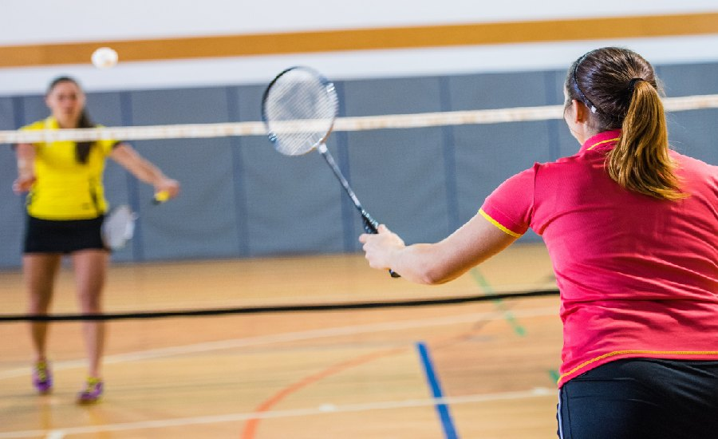
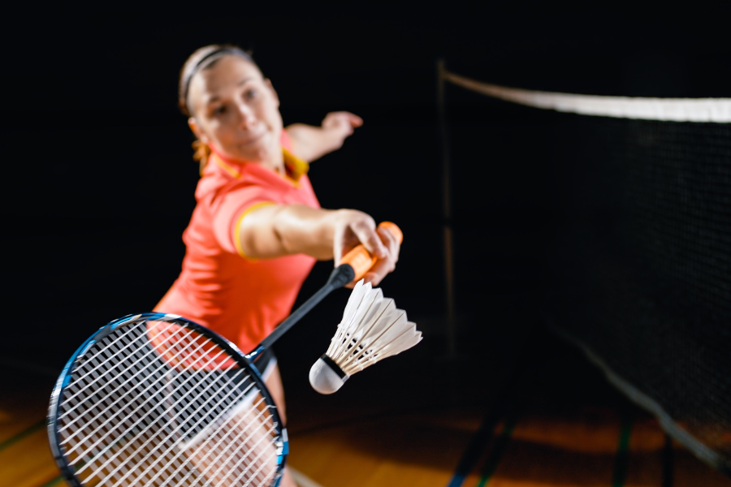

BADMINTON!

Badminton Overview
Badminton is a racquet sport where players hit a shuttlecock over a net. It can be played in singles or doubles formats.
Gameplay
Players strike the shuttlecock once before it crosses the net. Play ends when the shuttlecock hits the floor, or a fault is called.
Shuttlecock
The shuttlecock, made of feathers or plastic, has high drag and decelerates rapidly, making it unique compared to balls used in other sports.
History and Popularity
Badminton originated in British India and became popular in Europe and Asia, especially China. It debuted in the Summer Olympics in 1992, with mixed doubles added in 1996.
Skills Required
High-level badminton requires stamina, agility, speed, strength, precision, and advanced racquet skills, particularly wrist flexibility.
History

Charles Gleyre, Odysseus and Nausicaa (with badminton rackets)
The sport was played under the Pune rules until 1887, when J. H. E. Hart of the Bath Badminton Club drew up revised regulations.[5] In 1890, Hart and Bagnel Wild again revised the rules.[6] The Badminton Association of England (BAE) published these rules in 1893 and officially launched the sport at a house called "Dunbar"[c] in Portsmouth on 13 September.[12] The BAE started the first badminton competition, the All England Open Badminton Championships for gentlemen's doubles, ladies' doubles, and mixed doubles, in 1899.[5] Singles competitions were added in 1900 and an England–Ireland championship match appeared in 1904.
England, Scotland, Wales, Canada, Denmark, France, Ireland, the Netherlands, and New Zealand were the founding members of the International Badminton
The game gained popularity in Asia, particularly in countries like China, Malaysia, Indonesia, and South Korea. The International Badminton Federation (IBF), now known as the Badminton World Federation (BWF), was founded in 1934. Key founding members included England, Scotland, Wales, Ireland, Canada, Denmark, Netherlands, and New Zealand.
The sport is dominated by players from Asia, including countries like China, Indonesia, Japan, Malaysia, and India, as well as Denmark in Europe. The emphasis on speed, agility, and strategy has evolved the game into a highly competitive and dynamic sport
Creation
Rules and Regulations
1.Objective of the Game
The aim is to score points by landing the shuttlecock in the opponent's side of the court or forcing them into a mistake (fault).
2. Scoring System
- Rally Scoring:
A point is scored on every rally, regardless of which side served.
- Game:
First player/team to 21 points wins a game.
- Match:
Typically played best of 3 games.
- Side Switching:
Players switch sides after each game and during the third game when the leading player/team reaches 11 points.
- Singles:
The serve must come from the right side when the score is even and from the left when the score is odd.
- Doubles:
The serve starts from the right side and alternates sides each time the server wins a point. The serve is delivered diagonally to the opponent's service court.
The server must serve underhand, and the shuttlecock must land in the correct service box on the opposite side.
- Service Faults:
The serve is a fault if the shuttlecock is hit out of bounds, fails to pass over the net, or is delivered incorrectly.
2.Serving Rules

Team Setup
- Players on Court:
5 per team
- Substitutions:
Unlimited, but only when play is stopped
- Team Personnel:
Coach, assistant coaches, statisticians, trainers, etc.
Player Uniforms
- Standard Kit:
Shorts and jersey with visible unique numbers, high-top sneakers
- Design:
Jerseys may include team/player names and sponsor logos (outside North America)
Time-Outs
- Duration:
Typically 1 minute (100 seconds in the NBA), may be extended for TV commercials
Equipment
Badminton equipment includes a lightweight racquet with a stringed surface, designed for quick swings and precise shots. The shuttlecock, made of feathers or plastic, is hit over the net and decelerates rapidly due to its design. Players wear comfortable sports clothing and non-marking shoes for indoor play. A net divides the court, and the court is marked for singles or doubles play.